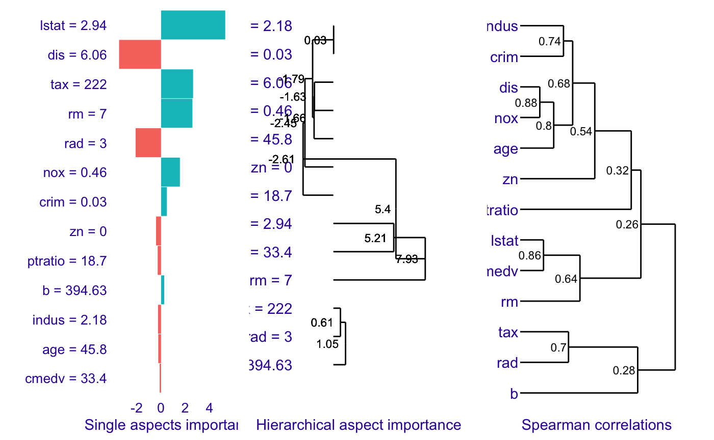
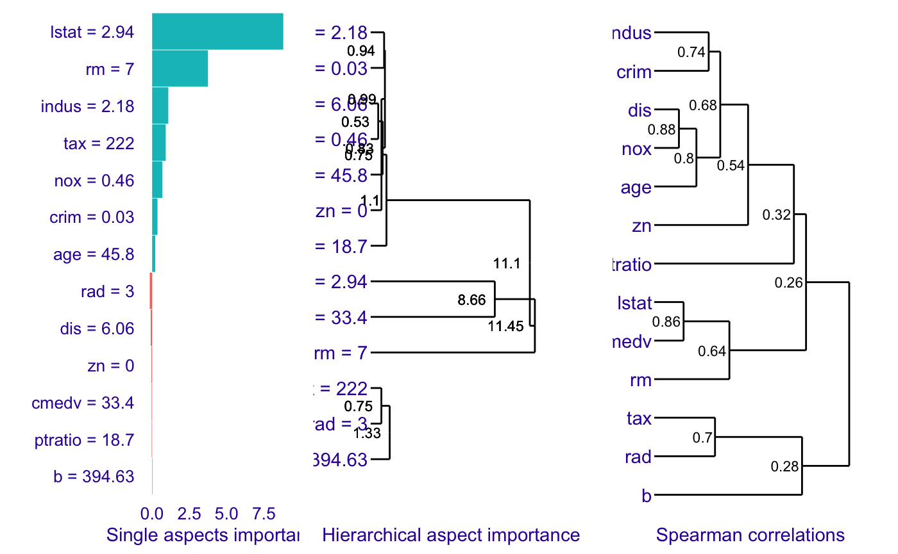

Description of aspect importance method
Katarzyna Pękala
2019-09-23
Source:vignettes/vignette_aspect_importance_description.Rmd
vignette_aspect_importance_description.RmdIntroduction
Aspect importance takes on the challenge of interpreting model built on highly dimensional data. There exist a number of methods for local explanation of black-box models, like Break Down, Shap or LIME. However, the problem arise when the explanatory variables are correlated.
Aspect importance’s goal is to increase the interpretability of the black box model by providing instance-level explainer for the groups of explanatory variables. It enables grouping predictors into entities called aspects. Afterwards, it can calculate the contribution of those aspects to the prediction.
Intuition
Our goal is to calculate aspects importance in the prediction of observation of interest. To achieve that, we will use subset of observations from the original dataset. We will modify it, so every observation will have at least one aspect (meaning at least one group of explanatory variables) replaced by the data from the observation of interest. Then we will build linear model that will predict how those replacements change the prediction of the modified data.
Method
We start by having dataset \(\mathcal{X}\) and model \(f\) built on this dataset. We would like to explain the prediction for the observation of interest \(x_*\).
Before we can use the method, we need to group the explanatory variables into aspects. We can use two different approaches: we can built the aspect list arbitrarily by using domain expertise or we can use group_variables() function that will do the grouping for us by using variables correlations. In the second approach, we are going to get aspects where every absolute value of pair-wise correlation of explanatory variables is no smaller than a given level. It should be noted that group_variables() works only for numerical variables.
The aspect importance function algorithm starts with sampling observations from the dataset \(\mathcal{X}\) into matrix \(A\).
Afterwards, it creates binary matrix \(X'\). The number of rows of this matrix is equal to number of sampled observations in \(A\). The number of columns is equal to the number of aspects.
In the next step, matrix \(A\) is modified into matrix \(A'\). The binary matrix \(X'\) directs how the modification will work: for given observation from \(A\), function checks in binary matrix \(X'\) which aspects should be replaced by aspects from the observation of interest \(x_*\).
In result, we obtain a modified matrix \(A'\) where for every observation at least one aspects is replaced with the data from the observation of interest.
Next, the method checks how the aspects replacement changed the prediction. In other words, it looks at the the difference between predictions for modified matrix \(A'\) and matrix \(A\).
Finally, we use linear model on the binary matrix \(X'\) where the difference in predictions is the dependent variable. Model’s coefficients are the results we are looking for - the values of aspects importance.
We can interpret coefficient \(\beta_i\) as the average change in prediction caused by replacing in \(A\) the variables (gruped in aspect \(i\)) by the variables from \(x_*\).
Aspect importance algorithm:
-
\(f\) - model
-
\(\mathcal{X}\) - dataset
-
\(x_*\) - observation to be explained
-
\(\mathcal{P}\) - aspects list, \(\mathcal{P} = {q_1, ..., q_m}\), partition of set of indexes \(J = {1, ..., p}\)
- \(b\) - size of sample
\(A\) = \([a_i^j]_{b \times p}\) = select_sample(\(\mathcal{X}\), \(b\))
sample (with replacement) B rows from \(\mathcal{X}\)\(X'\) = \([{x'}_i^k]_{b \times m}\) = sample_aspects(\(m\), \(b\))
sample binary matrix of size \(b \times m\)\(A'\) = \([{a'} _i^j]_{b\times p}\) = replace_aspects(\(A\), \(X'\))
\([{a'}_i^j] = [a_i^j]\), if \([{x'}_i^k] = 0\) where \(j \in q_k\)
\([{a'}_i^j] = x_{*j}\), if \([{x'}_i^k] = 1\) where \(j \in q_k\)\(Y_m = f(A') - f(A)\)
fit linear model \(g\), \(g(X') = Y_m\)
return coefficients of \(g\)
Examples
To illustrate how the method works, we will use Boston Housing dataset from mlbench package. We are going to build two models on the Boston Housing dataset: linear regression model and random forest. Those models will be built only on numerical variables. We would like to understand the predictions for the observation \(x_*\).
In the beginning we use group_variables() function with cut off level set on 0.6. As a result, we get a list of variables groups (aspects) where absolute value of features’ pairwise correlation is at least at 0.6. Then we call aspects_importance() to see which aspects are most important, to show how variables are grouped into aspects, what is minimal value of pairwise absolute correlation in each group and to check whether any pair of features is negatively correlated (neg) or not (pos).
library(ingredients)
library(mlbench)
library("randomForest")
library(gridExtra)
data("BostonHousing2")
set.seed(123)
data <- BostonHousing2[,-c(1:5, 10)] #excluding non numeric features
x <- BostonHousing2[,-c(1:6, 10)] #excluding non numeric features and target variable
new_observation <- data[4,]
Boston_lm <- lm(cmedv ~., data = data)
Boston_rf <- randomForest(cmedv ~ ., data = data)
predict(Boston_lm, new_observation)#> 4
#> 28.78676#> 4
#> 34.4931aspects <- group_variables(x, 0.6)
ai_lm <- aspect_importance(Boston_lm, data, predict_function = predict,
new_observation, aspects, N = 5500, show_cor = T)
ai_rf <- aspect_importance(Boston_rf, data, predict_function = predict,
new_observation, aspects, N = 5500, show_cor = T)
ai_lm#> aspects importance features min_cor sign
#> 4 aspect.group3 8.1427 rm, lstat 0.6408316 neg
#> 2 aspect.group1 -1.6985 crim, indus, nox, age, dis 0.6794867 neg
#> 5 aspect.group4 0.6513 rad, tax 0.7048757 pos
#> 7 aspect.group6 0.4980 b NA
#> 3 aspect.group2 -0.3418 zn NA
#> 6 aspect.group5 -0.3067 ptratio NA#> aspects importance features min_cor sign
#> 4 aspect.group3 11.77804 rm, lstat 0.6408316 neg
#> 2 aspect.group1 1.27556 crim, indus, nox, age, dis 0.6794867 neg
#> 5 aspect.group4 0.96573 rad, tax 0.7048757 pos
#> 3 aspect.group2 0.10865 zn NA
#> 7 aspect.group6 0.07659 b NA
#> 6 aspect.group5 0.07510 ptratio NA
Lasso
Function aspect_importance() can calculate coefficients (that is aspects’ importance) by using either linear regression or lasso regression. Using lasso, we can control how many nonzero coefficients (nonzero aspects importance values) are present in the final explanation. To use aspect_importance() with lasso, we have to provide n_var parameter, which declares how many aspects importance values we would like to get in aspect_importance() results.
With the help of lasso technique, we would like to check the importance of variables’ aspects, while controlling that two of them should be equal to 0. We will call aspect_importance() with n_var parameter set to 3.
aspect_importance(Boston_lm, data, predict_function = predict,
new_observation, aspects, N = 5500, show_cor = T, n_var = 3)#> aspects importance features min_cor sign
#> 4 aspect.group3 7.6348 rm, lstat 0.6408316 neg
#> 2 aspect.group1 -1.3316 crim, indus, nox, age, dis 0.6794867 neg
#> 5 aspect.group4 0.1427 rad, tax 0.7048757 pos
#> 3 aspect.group2 0.0000 zn NA
#> 6 aspect.group5 0.0000 ptratio NA
#> 7 aspect.group6 0.0000 b NAaspect_importance(Boston_rf, data, predict_function = predict,
new_observation, aspects, N = 5500, show_cor = T, n_var = 3)#> aspects importance features min_cor sign
#> 4 aspect.group3 11.651 rm, lstat 0.6408316 neg
#> 2 aspect.group1 1.148 crim, indus, nox, age, dis 0.6794867 neg
#> 5 aspect.group4 0.839 rad, tax 0.7048757 pos
#> 3 aspect.group2 0.000 zn NA
#> 6 aspect.group5 0.000 ptratio NA
#> 7 aspect.group6 0.000 b NAHierarchical aspects importance
When the dataset contains only numerical varaibles, we can use triplot() to verify the values of aspects importance for the different levels of variables grouping. Method starts with looking at the aspect importance where every aspect has one, single variable. Afterwards, it interatively creates bigger aspects by merging the ones with the highest level of absolute correlation into one aspect and calculating it’s contribution to the prediction.


Session info
#> R version 3.5.0 (2018-04-23)
#> Platform: x86_64-apple-darwin15.6.0 (64-bit)
#> Running under: macOS 10.14.4
#>
#> Matrix products: default
#> BLAS: /Library/Frameworks/R.framework/Versions/3.5/Resources/lib/libRblas.0.dylib
#> LAPACK: /Library/Frameworks/R.framework/Versions/3.5/Resources/lib/libRlapack.dylib
#>
#> locale:
#> [1] en_US.UTF-8/en_US.UTF-8/en_US.UTF-8/C/en_US.UTF-8/en_US.UTF-8
#>
#> attached base packages:
#> [1] stats graphics grDevices utils datasets methods base
#>
#> other attached packages:
#> [1] gridExtra_2.3 randomForest_4.6-14 mlbench_2.1-1
#> [4] ingredients_0.3.10
#>
#> loaded via a namespace (and not attached):
#> [1] Rcpp_1.0.2 compiler_3.5.0 pillar_1.4.2 iterators_1.0.12
#> [5] tools_3.5.0 digest_0.6.20 lattice_0.20-38 evaluate_0.14
#> [9] memoise_1.1.0 tibble_2.1.3 gtable_0.3.0 pkgconfig_2.0.2
#> [13] rlang_0.4.0 foreach_1.4.7 Matrix_1.2-17 rstudioapi_0.10
#> [17] yaml_2.2.0 pkgdown_1.4.1 xfun_0.9 ggdendro_0.1-20
#> [21] stringr_1.4.0 dplyr_0.8.3 knitr_1.24 desc_1.2.0
#> [25] fs_1.3.1 glmnet_2.0-18 rprojroot_1.3-2 grid_3.5.0
#> [29] tidyselect_0.2.5 glue_1.3.1 R6_2.4.0 DALEX_0.4.7
#> [33] rmarkdown_1.15 ggplot2_3.2.1 purrr_0.3.2 magrittr_1.5
#> [37] codetools_0.2-16 backports_1.1.4 scales_1.0.0 htmltools_0.3.6
#> [41] MASS_7.3-51.4 assertthat_0.2.1 colorspace_1.4-1 labeling_0.3
#> [45] stringi_1.4.3 lazyeval_0.2.2 munsell_0.5.0 crayon_1.3.4